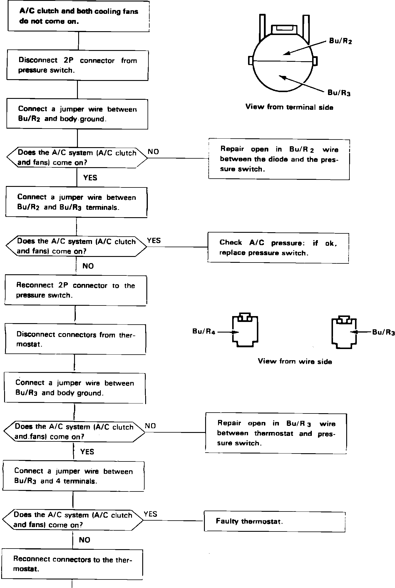
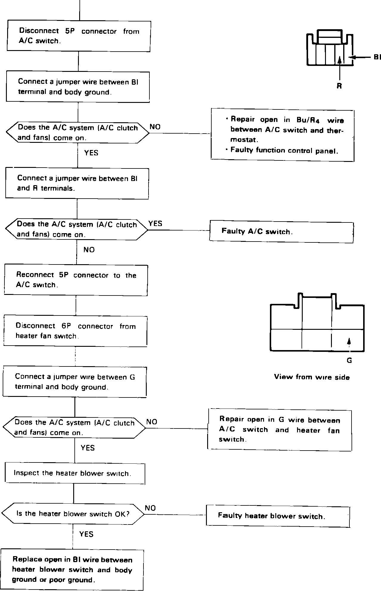

Cooling Fans & A/C Clutch Non-OP
Fig. 4a Electric cooling fan diagnosis. A/C clutch & both cooling fans do not operate (Part 1 of 2):

Fig. 4b Electric cooling fan diagnosis. A/C clutch & both cooling fans do not operate (Part 2 of 2):
